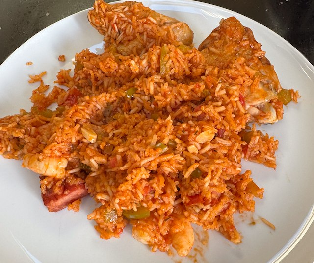

Jambalaya

From gumbo pages and youtube.
Ingredients
- 4 chicken thighs, boned and chopped into pieces
- 1 tbsp cajun seasoning
- 250g smokey sausage, sliced (kielbasa, andouille etc)
- 1 large onion, chopped
- 1 green pepper, diced
- 4 sticks celery, diced
- 6 garlic cloves, minced
- 2 tbsp tomato puree
- 400g tin tomatoes, chopped
- 1 chicken stock pot
- 1 tbsp cajun seasoning (yes more)
- 1 bay leaf
- 400ml rice, washed
- 400ml water, boiled
- ½ tsp table salt
- 300g big prawns, cooked
Method
Chicken. Heat a pan to hot. Add oil, chicken, cajun seasoning and salt. Turn heat to medium and cook until browned on one side. Flip the chicken and cook a little more. Reserve the chicken. Deglaze the plan with water, and add to the stock.
Sausage. Brown the sliced sausage, then reserve.
Veg. In the sausage oil, sauté the onions, peppers and celery, until translucent. Add tomatoes puree and garlic, and fry for a few min, until the puree browns a little.
Add more cajun seasoning, and fry for a moment. Then add the tomatoes, stock cube and bay leaves. Scrape the bottom of the pan, and cook for 10 min on medium low heat.
Add add rice, water and 1 tsp table salt. Mix well and bring to the boil, cover, and turn down to low. Cook for 20 min or so.
When the rice is cooked, add the prawns, chicken, sausage, mix and serve. The sauce should be a bit liquidy, not completely dry.